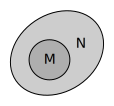
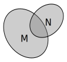
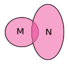
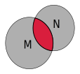
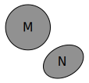
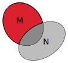

Dinge zu klassifizieren ist eine inherent menschliche Tugend.
Wir tun ähnliche Objekte, Personen und so weiter in "Schubladen"
um mit unserer Denkleistung zu haushalten.
In der Mathematik ist der Begriff der Menge fundamental.
Heutzutage ist es üblich mathematische Definitionen und Sätze
auf dem Mengenbegriff zu fußen. Dies hat sich als nützlich
erwiesen und bewahrt uns davor bis ins Unendliche
weiterzufragen.
Definitionen
Die klassische Definition des Mengenbegriffs von Georg Cantor
(1845-1918)
Definition: Menge
"Eine Menge ist jede Zusammenfassung von bestimmten
wohlunterschiedenen Objekten unserer Anschauung oder unseres
Denkens."
So können wir zum Beispiel die Einwohner Berlins zur Menge der
Berliner zusammenfassen. Die Einwohner Berlins werden dann als
Elemente der Menge benannt.
Wir nennen die Menge der Berliner fortan \mathfrak{B}.
So können wir für eine Person p nun angeben, ob diese
p\in\mathfrak{B}\quad
(sprich: p ist Element von \mathfrak{B})
p\not\in\mathfrak{B}\quad
(sprich: p ist nicht Element von \mathfrak{B})
Berliner ist oder nicht.
Wollen wir zum Beispiel angeben, dass die Personen p
und q Berliner sind, so schreiben wir
p,q \in \mathfrak{B}
Bei einer Menge von Personen ist es im gegensatz zu einer Menge
von Zahlen (z.B. die Menge der Studierenden an der TU-Berlin als
Matrikelnummern) offensichtlich so, dass ein und das selbe Element
nicht mehrfach in der Menge enthalten sein kann.
Analog legen wir fest, dass diese Eigenschaft für alle Mengen
gelten soll. So ist
M = \{1,1,2,3\}
also keine Menge sondern ein System.
Es gibt prinzipiell zwei Arten eine Menge zu definieren:
M=\{1,3,5,7,11,13,17,…\}
Durch aufzählen der Elemente und
M=\{a\;|\;a \mbox{ ist Primzahl}\}
durch Benennen von Eigenschaften der Elemente.
Zu beachten ist, dass die Pünktchen nur benutzt werden dürfen,
wenn aus dem Kontext klar wird, was die weiteren
Mengenelemente sind.
Grundlegende Begriffe und Symbole
Die leere Menge: "\varnothing"
Ist eine wohldefinierte Menge, die keine Elemente enthält.
Element von: "\in"
Ist M eine Menge und x irgend ein mathematisches
Objekt, so steht x \in M für die Aussage x
gehört zu M.
Nicht Element von: "\not\in"
Zum Beispiel 3 \not\in \{4,7,9\}
Vereinigung zweier Mengen: "\cup"
Sind M und N Mengen, so bezeichnet
M \cup N die Menge der Elemente, die in einer der beiden
Mengen enthalten sind.
Abbildung 1: Vereinigungsmenge von A und
B
Durchschnitt zweier Mengen: "\cap"
Sind M und N Mengen, so bezeichnet der
Durchschnitt M \cap N die Menge der Elemente, die in
M und N enthalten sind.
Abbildung 2: Schnittmenge von A und
B
Teilmenge: "\subset"
Sind M und N Mengen und jedes Element von
M ist auch Element von N, so gilt
M \subset N.
Abbildung 3: A ist eine (echte) Teilmenge
von B
Ist gleich: "="
Zwei Mengen M und N sind genau dann gleich
wenn M \subset N und N \subset M gilt.
Komplementärmenge: "\setminus"
Für Mengen M und N ist die Menge
M \setminus N die Menge, die alle Elemente von M
enthält, die nicht auch Element von N sind.
Abbildung 4: A ohne B
Potenzmenge: \mathcal{P}(.)
Ist M eine Menge, so bezeichnet \mathcal{P}(M)
die Menge aller Teilmengen von M.
Beispiel:
\begin{eqnarray*}
M &=& \{1,2,3\} \\
\mathcal{P}(M) &=& \{\varnothing, \{1\},\{2\},\{3\},
\{1,2\},\{1,3\},\{2,3\},\{1,2,3\}\}
\end{eqnarray*}
Beachte, dass die leere Menge Teilmenge jeder Menge ist.
\varnothing \subset M gilt für alle M.
Kartesisches Produkt: "\times"
Sind M und N Mengen und x \in M,
y \in N zwei beliebige Elemente, dann ist
M \times N die Menge aller geordneten Paare
(x,y).
Beispiel: Die Menge der reellen Zahlen
\mathbb{R}.
\mathbb{R} \times \mathbb{R}
ist dann die zweidimensionale Zahlenebene in der jeder Punkt dieser
Ebene enthalten ist. Anstatt \mathbb{R} \times \mathbb{R}
schreibt man meist \mathbb{R}^2.
Beispiele und Test
Rekapitulieren Sie das bis hierhin gelernte indem Sie für nachfolgende
Beispiele die jeweils korrekten Aussagen markieren.
Welche formalen Ausdrücke stehen für die Menge:
"Alle Berliner, die studieren"
\mathfrak{A}:=\{p\,|\,p \mbox{ ist Berliner}, p \mbox{ studiert} \}
\mathfrak{B}:=\{p\,|\,p \mbox{ ist Berliner} \}
\;\subset\;
\mathfrak{D}:=\{p\,|\,p \mbox{ studiert} \}
\mathfrak{C}:=\varnothing
\mathfrak{S}:=\{p\,|\,p \mbox{ studiert} \}
\;\cap\;
\mathfrak{B}:=\{p\,|\,p \mbox{ ist Berliner} \}
\mathfrak{B}:=\{p\,|\,p \mbox{ ist Berliner} \}
\;\cup\;
\mathfrak{S}:=\{p\,|\,p \mbox{ studiert} \}
Welche formalen Ausdrücke stehen für die Menge:
"Alle Studenten, die an der HU oder TU eingeschrieben sind"
\mathfrak{S}:=\{p\,|\,p \mbox{ ist an TU eingeschrieben},
p \mbox{ ist an HU eingeschrieben} \}
\mathfrak{T}:=\{p\,|\,p \mbox{ ist an TU eingeschrieben} \}
\;\cup\;
\mathfrak{H}:=\{p\,|\,p \mbox{ ist an HU eingeschrieben} \}
\mathfrak{H}:=\{p\,|\,p \mbox{ ist an HU eingeschrieben} \}
\;\setminus\;
\mathfrak{T}:=\{p\,|\,p \mbox{ ist an TU eingeschrieben} \}
\mathfrak{T}:=\{p\,|\,p \mbox{ ist an TU eingeschrieben} \}
\;\cap\;
\mathfrak{H}:=\{p\,|\,p \mbox{ ist an HU eingeschrieben} \}
Welche formalen Ausdrücke stehen für die Menge:
"Personen, die 'Müller' heißen, deren Vorname aber nicht
'Klaus' ist"
\mathfrak{N}_{Müller}:=\{p\,|\,p \mbox{ heißt 'Müller'}\}
\,\supset\,
\mathfrak{N}_{Klaus}:=\{p\,|\,p\mbox{'s Vorname ist 'Klaus'}\}
\mathfrak{N}_{Klaus}:=\{p\,|\,p\mbox{'s Vorname ist 'Klaus'}\}
\,\setminus\,
\mathfrak{N}_{Müller}:=\{p\,|\,p \mbox{ heißt 'Müller'}\}
\mathfrak{N}_{Müller}:=\{p\,|\,p \mbox{ heißt 'Müller'}\}
\,\setminus\,
\mathfrak{N}_{Klaus}:=\{p\,|\,p\mbox{'s Vorname ist 'Klaus'}\}
\mathfrak{N}_{Klaus}:=\{p\,|\,p\mbox{'s Vorname ist 'Klaus'}\}
\,\subset\,
\mathfrak{N}_{Müller}:=\{p\,|\,p \mbox{ heißt 'Müller'}\}
Nun versuchen Sie für die abgebildeten Mengen die korrekten
Ausdrücke zu identifizieren. Die Farbcodierung entspricht derer
der Abbildungen 1-4 (Wenn in einem Bild graue und rote Flächen
dargestellt werden ist die rote Fläche die gesuchte Menge).

Abbildung T1

Abbildung T2

Abbildung T3

Abbildung T4

Abbildung T5

Abbildung T6
Schreiben Sie die jeweilige(n) Nummer(n) der Mengenabbildungen (also T1,
T2, usw.) in die Texteingabefelder.
M \cap N = \varnothing
M \cup N
M \cap N
M \subset N
M \not\subset N
M \setminus N
Gebräuchliche Mengen
In diesem Kurs werden wir uns häufig mit Zahlenmengen befassen.
Die bekanntesten unter diesen sollen hier kurz benannt werden.
\mathbb{N}:=\{1,2,3,…\} ist die Menge der
natürlichen Zahlen.
\mathbb{N}_0:=\{0,1,2,…\} ist die Menge der
natürlichen Zahlen mit Null.
Beide sind gebräuchlich. Strenggenommen muss wann immer die
Menge der Natürlichen Zahlen benutzt werden soll klargestellt
werden, welche Variante gemeint ist. In diesem Kurs ist im
Allgemeinen \mathbb{N}_0 gemeint, auch wenn
\mathbb{N} geschrieben steht.
\mathbb{Z}:={0,1,-1,2,-2,…} ist die Menge der ganzen
Zahlen.
\mathbb{Q}:=\{\frac{p}{q}\,|\,p,q\in\mathbb{Z},q\neq0\}
ist die Menge der rationalen Zahlen.
\mathbb{R} ist die Menge der Reellen Zahlen.
Das heißt, sie beinhaltet alle rationalen und alle irrationalen
Zahlen.
\mathbb{R}^+:=\{x\in\mathbb{R}\,|\,x>0\} ist die
Menge der positiven reellen Zahlen und \mathbb{R}^+_0:=
\{x\in\mathbb{R}\,|\,x\geq0\} die Menge der positiven
reellen Zahlen mit Null.
Intervalle
Um Teilmengen von \mathbb{Q} und \mathbb{R}
anzugeben, benötigen wir, wie bei \mathbb{R}^+ und
\mathbb{R}^+_0 schon verwendet, noch die Symbole
kleiner "<", kleiner gleich
"\leq", größer ">" und größer
gleich "\geq".
So können zum Beispiel alle Zahlen x\in\mathbb{R} die
größer als a\in\mathbb{R} und kleiner als
b\in\mathbb{R} sind mit
(a,b):=\{x\in\mathbb{R}\,|\,a < x < b\}
angeben. Die Menge (a,b) bezeichnen wir als
offenes Intervall der reellen Zahlen zwischen a
und b, die Menge
[a,b]:=\{x\in\mathbb{R}\,|\,a \leq x \leq b\}
als abgeschlossenes Intervall der reellen Zahlen zwischen
a und b. Außerdem gibt es noch
\begin{eqnarray*}
[a,b)&:=&\{x\in\mathbb{R}\,|\,a\leq x < b\} \\
(a,b]&:=&\{x\in\mathbb{R}\,|\,a < x \leq b\}.
\end{eqnarray*}
Bemerkung: Das "spezielle" offene Intervall
(a,a) definieren wir für alle a\in\mathbb{R}
mit
(a,a):=\varnothing.
Verständnisfragen zu Intervallen
Welche der folgenden Aussagen sind im Allgemeinen nicht
gültig?Die Schnittmenge zweier offener Intervalle ist
ein offenes Intervall.Das Komplement eines offenen Intervalls in einem
abgeschlossenen Intervall ist ein abgeschlossenes Intervall.
Die Vereinigung zweier offenen Intervalle ist ein offenes
Intervall.


).svg)